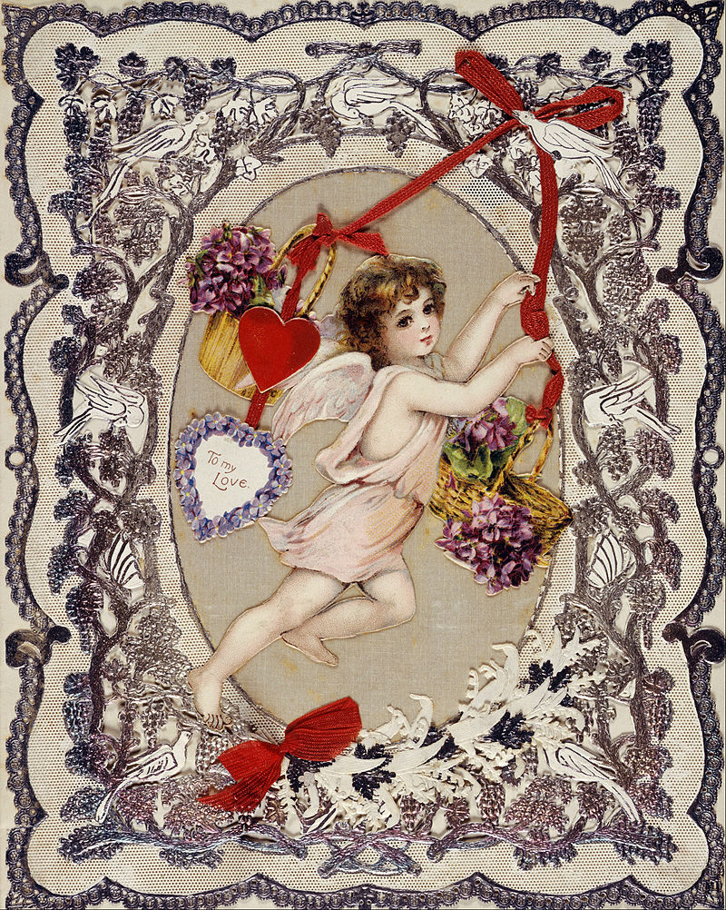

Valentine's Day

A Victorian Valentines Day Card in the Museum of London
Valentines Day, also known as Saint Valentine's Day or the Feast of Saint Valentine, is an annual celebration on February 14th. It originated as a day to honor a Christian martyr or two named Saint Valentine - they might have been the same person. Since the High Middle Ages or High Medieval Period, it has been associated with courtly love. Today it is a celebration of romance and love for many! Read on to see how people around the world celebrate!
- Brazil Brazil celebrates Dia dos Namorados (Lovers' Day) on June 12th. Single women may perform simpatias, which are rituals to find a good boyfriend or husband.
- Colombia Colombia celebrates Dia del Amor y la Amistad (Day of Love and Friendship) on the third Saturday of September. A popular tradition is a game called Amigo Secreto (Secret Friend), which is like the Christmas game, Secret Santa.
- United States The United States celebrates with about 190 million Valentines Day cards every year. That doesn't include the hundreds of millions of Valentines Day cards school children exchange.
- China China celebrates the Qixi Festival (The Night of Sevens) on the seventh day of the seventh month of the lunar calendar. The legend is that the Cowherd star and the Weaver Maid star, normally separated by the Milky Way (silvery river), are allowed to cross it to meet on this day.
- Japan In Japan, it is custom for the women to give chocolates to the men on Valentines Day. Male coworkers may receive giri-choko (obligation chocolate) while loved ones receive honmei-choko (true feeling chocolate). Friends, especially girls, may exchange tomo-choko (friend chocolate). Men reply on White Day, March 14th, with white chocolate.
- Philippines In the Philippines, Valentines Day is called Araw ng mga Puso, and it is the most popular day for weddings.
- Singapore Singaporeans spend a lot of money on Valentines Day. 60% of Singaporeans said that they would spend $100-$500 leading up to Valentines Day.
- South Korea Women in South Korea give chocolate to the men on Valentines Day, and the men give candy to women on March 14th, known as White Day, much like Japan. April 14th is known as Black Day, and on this day, those who did not receive chocolate or candy eat jajangmyeon (black noodles) and lament their "single life".
- Taiwan Taiwan celebrates the Qixi Festival, Valentines Day, and White Day. The only difference is that on Valentines Day, the men give gifts to the women, and on White Day, the women give gifts to the men.
- France In France, Valentines Day is called Saint Valentin, and is celebrated much like it is in other western countries. The relics of Saint Valentin de Terni, are held in the church of Saint-Jean-Baptiste and Saint-Jean-l'Evangeliste.
- Ireland Many in Ireland make a Christian pilgrimage to the Shrine of St. Valentine, which is said to hold relics of Saint Valentine of Rome. At the shrine, they pray for love and write their prayer requests down in a book.
- Portugal In some regions in Portugal, women give a lenco de namorados (lovers' handkerchief), which is a handkerchief, usually embroidered with love motifs.
- United Kingdom Some people in Wales, instead of or in addition to Valentines Day, celebrate Dydd Santes Dwynwen (St. Dwynwen's Day) on January 25th. St. Dwynwen is the Welsh patron saint of love.